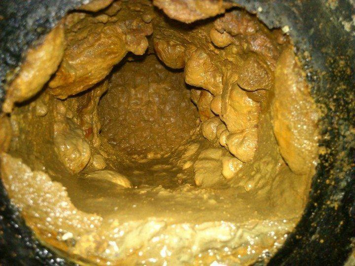

Доставка питьевой воды в Киеве и Киевской области
Чистая вода — это базовое условие для здоровья каждого человека. В условиях современного города, где качество водопроводной воды часто оставляет желать лучшего, надежный сервис по доставке очищенной воды становится необходимостью. Crystal Water обеспечивает жителей Киева и Киевской области водой эталонной чистоты.
Почему выбирают доставку Crystal Water?
Мы не просто перевозим бутыли, мы гарантируем качество продукта на каждом этапе:
- Профессиональная очистка. В отличие от многих локальных поставщиков, мы используем полноценную систему обратного осмоса и озонирования. Это гарантирует отсутствие бактерий, вирусов и тяжелых металлов.
- Безопасная тара. Мы используем только качественный пищевой поликарбонат, который не выделяет вредных веществ даже при длительном хранении.
- Пунктуальность и сервис. Мы понимаем, что вода нужна всегда. Наша логистическая сеть настроена так, чтобы доставка была быстрой и удобной для вас.
Решения для разных клиентов
Для частных лиц и семей
Обеспечьте своих близких чистой водой. Мы предлагаем удобные тарифы на доставку бутилированной воды домой, чтобы вы могли забыть о фильтрах и постоянном контроле качества.
Для офисов и бизнеса
Чистая вода в офисе — это залог продуктивности сотрудников. Мы предлагаем оптовые цены, регулярный график поставок и помощь в обслуживании кулеров.
Закажите чистую воду прямо сейчас
Не ждите, пока закончится запас. Обеспечьте себя и свою семью водой, которой можно доверять. Доставка в Киеве и Киевской области от Crystal Water.
Оформить заказ на доставку